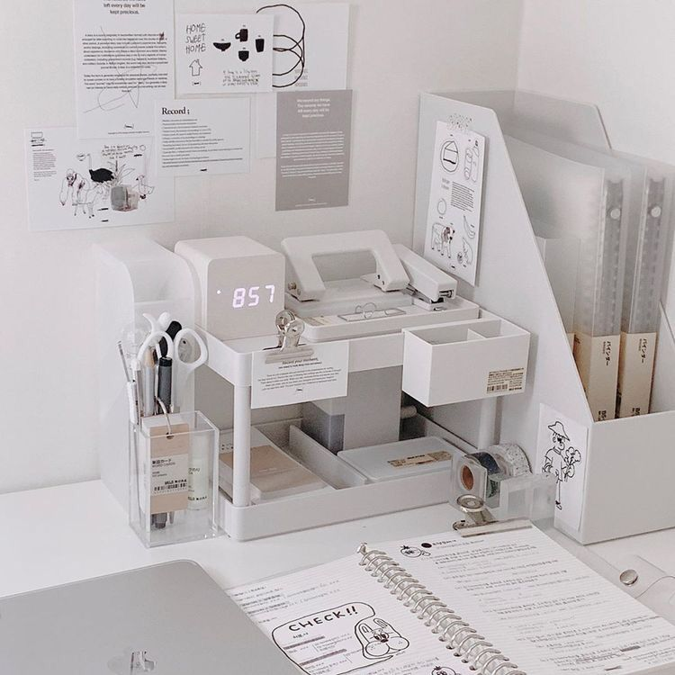

Tips belajar efektif
Belajar sesuai gaya belajar yang dimiliki Belajar sesuai dengan gaya belajar yang dimiliki, akan membantu belajar menjadi lebih mudah. Dengan jadwal belajar membantu kita lebih mudah dalam mengatur waktu. Namun, jika kamu tipe imprupisasi, mungkin dengan adanya jadwal tidak terlalu membantu karena lebih suka dengan kegiatan yang spontan. Membuat ringkasan pelajaran, memudahkan kita dalam mengingat dan kembali mengulang pelajaran Materi penting tidak hanya didapatkan dari materi yang didapat dari buku, tetapi juga yang disampaikan oleh guru/dosen. Tempat yang kondusif membantu kita fokus dan kondusif Mengulang dengan berkala akan lebih memudahkan dalam mengingat apa yang dipelajari, dibandingkan dengan mempelajari secara langsung Tidak semua waktu baik untuk dijadikan belajar, carilah waktu terbaik untuk belajar. Tips mengingat pelajaran. Aktif belajar tidak selalu diartikan dengan Aktif dalam belajar mandiri, tetapi juga harus Aktif bertanya dikelas. Dalam setiap materi maupun sub materi tentu ada kata yang menggambarkan secara keseluruhan, cobalah ingat dan jadikan itu sebagai kata kunci dalam mengingat pelajaran. Belajar dari rangkuman akan lebih memudahkan kita, karena mengingat bagian-bagian penting dari materi. Selain itu dengan proses mencatat juga membantu kita mengingat materi secara tidak langsung. Kembali membaca ulang materi-materi yang sudah dipelajari, membantu ingatan kita kembali mengingat pelajaran yang sudah dipelajari. Membuat akronim atau singkatan, itu memudahkan kita untuk mengingat. Contohnya seperti warna "MEJIKUHIBINIU", secara tidak langsung kita menghafal semua warna tanpa menggunakan kosakata yang banyak. |